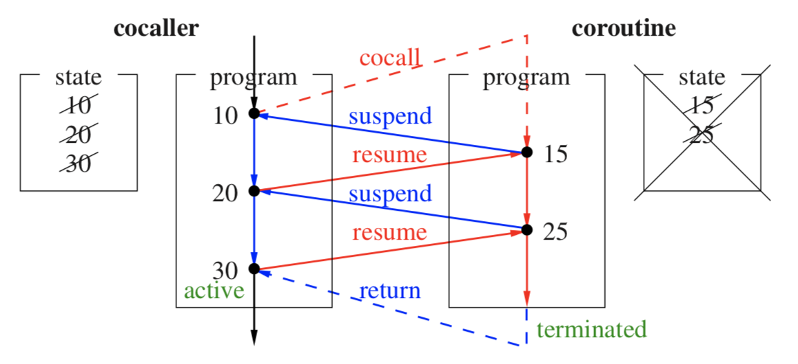
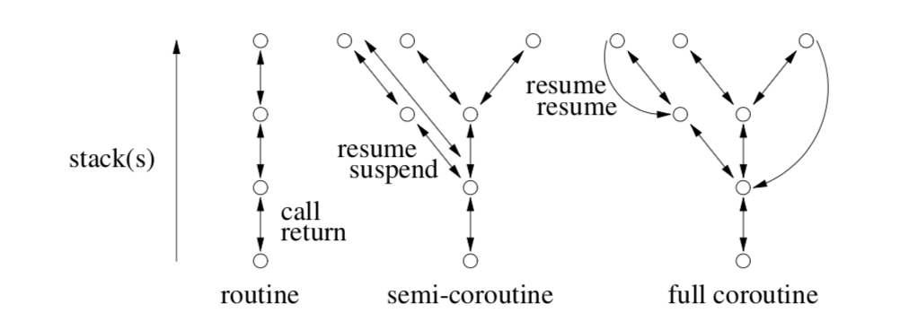
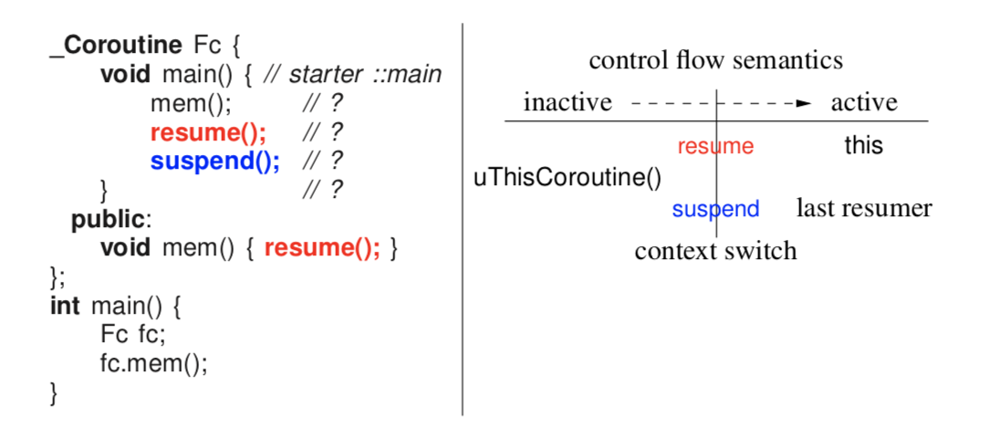
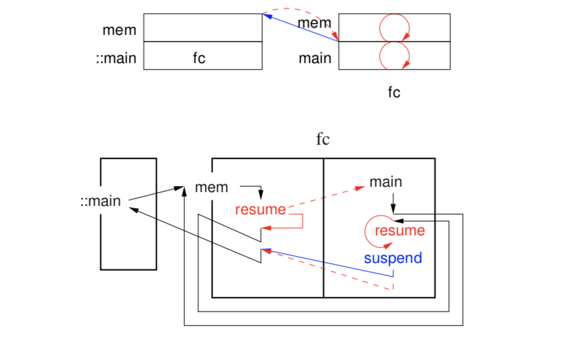
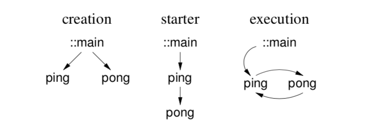
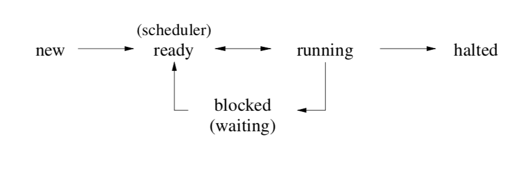
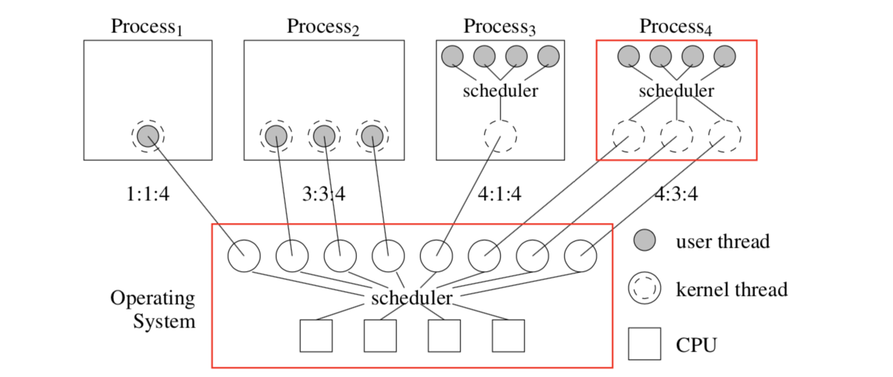
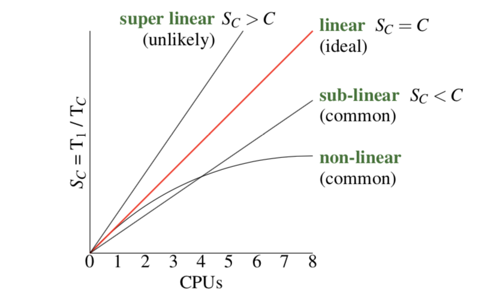
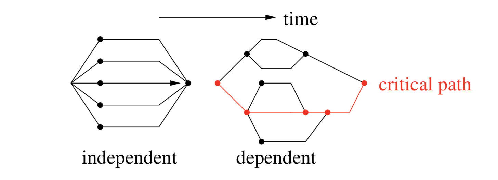
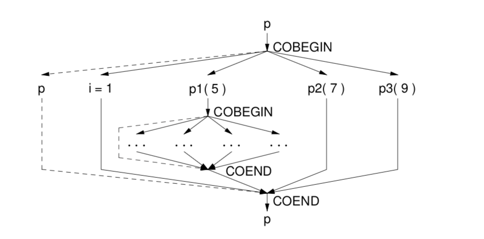

Back to UWaterloo
Summary
- static multi-level exits are blocks with multiple breaks/gotos
- dynamic memory allocation uses shared memory on the heap instead of stack
- dynamic multi-level exits extend normal call/return semantics, allowing control flow to be transferred in the reverse direction of the function call stack, called nonlocal transfer
- traditional approaches to nonlocal transfer are register flags and return codes, golang return unions
- exception handling is complex control flow that enables nonlocal transfer
-
static/dynamic characterizes whether a line in code is known at compile time or not
- static call static return is a sequel, catching an exception
- static call dynamic return is a routine
- dynamic call static return is a termination exception
- dynamic call dynamic return is function pointer, or resumption exception
-
Coroutines allow control flow to be suspended, enabling more complex control flow graphs
-
Semi-coroutines enable traversal up and down the call stack
- Nonlocal transfer is allowed between coroutines, but only through resumption (too powerful to allow a coroutine to unwind anothers' stack)
-
Full-coroutines enable cycles
- exceptions have polymorphic types, defining a hierarchy
- exception truncation can occur, when catching a parent class and down casting from the static type is not possible
-
finally is an example of a catch-any mechanism
- an exception list can be used to specify throwable/expected exception types
- destructors are not allowed to raise exceptions, since objects being destroyed during exception handling might cause more exceptions which would require postponing (but stack may be unwound) or dropping the original exception
- many languages have zero-cost exceptions, which is performant under the assumption that exceptions are rare
- performs linear search over possible handlers instead of setting/resetting labels
- concurrency can often be used to improve performance
- multiprocessor hardware allows parallelism
- each execution moves between states: executing, ready, blocked
- threading model uses abstraction to allow threading to occur at different layers
- kernel threads are scheduled by the OS, map to processes, each with their own threads and own scheduling, and the kernel threads could be executing on a virtual machine
- three types of concurrent systems/language designs: discovery of parallelization, implicit constructs guided by the programmer, and explicit constructs declared by the programmer
- we can measure speed up by \(\frac{T_1}{T_c}\), c is the number of CPUs, and fall into four categories: super-linear, linear, sub-linear, non-linear (most common)
- Amdahl's law gives a way to calculate max speedup over a program by describing a program's percentage of concurrent code
- concurrency requires 3 mechanisms in a programming language: creation, synchronization, communication
- divide and conquer algorithms and be parallelized, and brought together by termination synchronization
- any communication requires data transfer, which requires one thread to be ready to accept data, which requires synchronization
- communication mechanisms include shared memory space
- all concurrent exceptions are nonlocal (otherwise local unwinding could disturb other exception handling instances on other processors)
- made possible by the fact that all tasks/coroutines have their own stack
- atomicity is a property for instructions, non atomic instructions may require mutual exclusion
- mutual exclusion is sequential, which affects runtime by Amdahl's law
- solving the mutual exclusion problem can be described with 5 rules:
-
safety: only one thread can be in the critical section at a time
- threads run at nondeterministic speeds
- a thread must be in the entry or exit code controlling access in order to prevent other threads from entering
-
liveliness: preventing indefinite postponement or livelock (eventual progress is required)
- no starvation: a thread must eventually gain access to the critical section
- busy waiting often affects liveliness and starvation
-
unfairness occurs when threads don't come FCFS (FIFO)
- threads that don't respect fairness are barging
- barging avoidance is a solution that handles and acknolwedges barging in a fair way
- barging prevention is characteristic of a solution that doesn't allow threads to barge at all
- looking at software solutions for mutual exclusion:
- simple lock algorithm violates safety
- alternating algorithm can block itself out which violates rule three since it is blocking itself without being in the entry/exit code
- declaring intent violates liveliness if threads are perfectly in sync
- prioritized retraction (one thread doesn't back down) can starve the low priority thread
-
Dekker's algorithm alternates priority to prevent starvation
- has unbounded overtaking, in which one thread could repeatedly reacquire the lock while the other thread sleeps, which is different than starvation because starvation requires the other thread to attempt to acquire the lock
-
Peterson's Algorithm has bounded overtaking, because the loser doesn't retract their intention (which is allowed because prevention occurs in the entry protocol)
- for N threads, tournament algorithm can convert any valid 2-thread solution by building a binary tree
- has unbounded overtaking, no synchronization between nodes
- extend prioritized entry to a list of priorities, but has same problem of starvation as the 2-thread prioritized algorithm
- N-Thread Bakery (Tickets) Algorithm
Introduction
Concurrency is advanced code control flow.
- one possible control flow style--static multi-level exits--is to use
breaks instead of flag variables, creating a multi-exit loop
- static exit points known at compile time
Dynamic Multi-Level Exit
- modularization cannot always work when attempting to break out a function that contains an exit (routine scope)
-
dynamic multi-level exit calls extend call/return semantics to transfer in the reverse direction to normal routine calls
- control structures can use exceptional transfer to facilitate multiple outcomes
- direct control flow to the specified activation (function) on the stack
- therefore not lexically determined, meaning a flow to a recursive function is ambiguous
-
nonlocal transfer is any that isn't a call or return
- in C,
jmp_buf, setjmp, longjmp
Traditional approaches
- local fix-up routines
- return union, using
variant<type1, type2>, and doing checks with bool holds_alternative<type2>()
a goto L here is the same control flow as exception handling (catching at the label L)
- forwarding is a bad thing to have (dealing with union returns)
- in a chain of function calls, the intermediate functions don't need to be coupled when we avoid forwarding
Longjmp and setjmp -- src
- required variable of type
jmp_buf
-
setjmp takes the variable, returning 0 the first time it is invoked, while filling the jmp_buf with the calling environment (state of registers when function is invoked, setjmp in this case) and signal mask (?)
Exception handling
so dynamic multi-level exit allows complex forms of transfers among routines, this is often called exception handling
- an exceptional event is known, low frequency and triggers an alternative outcome
- exception handling is more complex for some environments, C++ has destructors
- no matter how a routine is exited, the destructor is ALWAYS run
- stack un-winding has rules to call destructors
- when a program doesn't catch an exception, a sequential program will abort
- a concurrent program might ask other executions (with their own runtime stacks) to handle
-
propagation mechanism is a rule to locate the handler, often linear search popping off the stack but other algorithms may be used
-
handler catches exceptions by matching one or more exception types
Static/Dynamic Call/Return
| static |
dynamic |
| static |
sequel |
termination exception |
| dynamic |
routine |
routine pointer, virtual routine, resumption |
static return means that where the control flow is transferred after a function call is known statically (without running)
dynamic return means the location to return to (the caller) isn't known until code is run. In other words, there are multiple function callers.
static call means you know what function will be run when calling foo()
dynamic call means we don't know what code block will be run when calling a function.
- sequel is static propagation
- an example of a sequel is the implementation of the catch body
Resumption
termination is recovery, resumption says there might be a fix without needing to unwind the stack
- in resumption, there is no stack unwinding
-
catchResume adds another frame on top of the stack using a normal routine call- extra cost is simply searching for it
- propagation goes down the stack looking for a handler for the type of exception thrown (checking guarded blocks)
- in exceptional example 2.8, C5 is just being a good citizen, cleaning up and forwarding the exception down the stack
- in C8, we hit a resume, so we don't unwind the stack, it's recovering from exceptional state
- fixup routine is in the catch block--the handler, instead dynamically return to the top of the stack
- might still terminate, in which case we'll do a static return and unwind the stack
Micro C++
- supports two forms of raising: throw and resume
- supports two kinds of handlers, termination and resumption
- supports propagation of nonlocal and concurrent exceptions
- event is just like a class;
_Event is just a keyword replacement for class
- automatic inheritence
- msg, for unhandled exceptions
-
uBaseCoroutine source tells you who threw the exception
- rethrow is just continuing (forwarding) unwinding (probably for cleanup)
- reresume is just forwarding the exception
why is there no _At for _Throw?
- if you can throw at someone, you can unwind their stack
3 Coroutine
Any routine that can be suspended and resumed
- requires execution location, state, status (active, inactive, terminated)
- coroutine does not start from the beginning at each activiation, it activates at last point of suspension
- synchronous execution alongside other coroutines, they each have their own stack but no concurrency here

Let's look at a Fibonacci number generator, nextFibonacci()
- first year we wrote a loop, second year we write a class to encapsulate state, saw that it was actually closures storing state
- now we can use coroutines to hold state implicitly
Nonlocal Exceptions
- raised by a source execution, using
_Resume ... _At ...
-
_Enable { ... } allows nonlocal exceptions (resumes)
- for nonlocal resumption,
_Resume is a proxy for an actual raise in the faulting coroutine- propagation only starts when faulting routine becomes active
- UnhandledExceptions are always enabled, it is resumed at the routine that resumed you, when your exception reaches the bottom without being handled
-
CatchResume( uaseCoroutine::UnhandledException ) let's you run a fixup routine from the resumer, and control flow is returned to the instruction after the thrower
-
catching it will destroy the throwing coroutine?
Full Coroutines

- semi coroutines activate the member of routine that activated it (resume, suspend)
- analogous to call/return semantic, but we're context switching instead of adjusting this on the stack
- this introduces a tree-kind-of control flow
- full coroutine has a resume cycle, looks like recursion, but recursion is still linear control flow, just adding things to a stack

- program is progressing through time from left to right
- front side of context switch, coroutine with the thread will become inactive (it's the only thing running)
uThisCoroutine() -> thread holder
- coroutine remembers which coroutine to return to (similar to how a function knows who to return to)
-
suspend() inactivates uThisCoroutine to activate last resumer
-
resume() also inactivates uThisCoroutine but instead activates the this coroutine

-
Fc.mem() is a function call, from the ::main coroutine. So in mem(), this = fc but uThisCoroutine() = ::main
- on fc's stack now, we're in
Fc::main, make a function call to mem() (right stack)
- here,
this = fc and uThisCoroutine() is still fc- this is now a full coroutine
- finally,
suspend() is called, but fc was the last resumer, so resuming the last resumer just resumes yourself! This is useless, so resuming yourself does not overwrite last resumer
Life cycle
- start the cycle
- starting requires mutually recursive references, but declaration must be before definition
- execute the cycle
- stopping the cycle to return to the program
::main

- starter is always stored, and we'll have a tree of these
- in producer-consumer, can eliminate stop function using exceptions,
_Enable {} by itself checks if there's an exception hooked onto me
Coroutine Languages
two types of coroutine languages: stackless and stackful (powerful)
- stackless cannot call other routines and then suspend
5 Concurrency
- a thread is a path through a program
- independent (PC not affected by other threads), sequential (no instructions within the thread are executed in parallel)
- a process is a program component, which its own thread
- a task (similar to a process) but lightweight
- might share common memory with other tasks
- parallel execution is when multiple operations occur simultaneously, only on multi-processor systems
- concurrent execution is any situation with multiple threads executing, simultaneously or with context switches
5.3 Concurrent Hardware
- task switching can occur at non-deterministic program locations, unlike coroutines
- coroutines control context switches at the program logic level, while tasks are handled below the user-level logic
- memory is shared between tasks, so heap-allocated data
- concurrent execution of threads is possible with separate memories, in distributed systems
5.4 Execution States

- non-determinism happens between
ready <-> running states
5.5 Threading Model

- programmer asks for certain amount of access to CPUs, scheduler assigns this
- a process conceptually may have a single thread, or multiple kernel threads
- a process might define their own scheduler to give it out to its user threads
- user threads are low cost structuring mechanisms (routines, objects, coroutines)
- if we think of kernel threads as cores, then a process has the same model as the operating systems (recursive model!)
- can add nano threads recursively above this diagram, or virtual machines below OS
- practically, this model has 4 layers: Virtual Machine, OS, Processes, Nano Threads
- let's talk about ratio terminology; 1 to 1 and n to m describe ratios between user threads and kernel threads, and finally suffix a third value, the number of cores (which is optional)
5.6 Concurrent Systems
three types:
- discovered concurrency, derived from a sequential program (only some programs)
- implicit constructs (compiler decides how many threads to run)
- explicit constructs, the important one to understand
1 and 2 build on 3.
It turns out there is no single model for having all concurrent capabilities
- to solve all concurrency problems, threads need to be explicit

- nonlinear is common, you hit a bottleneck and performace degrades
- this is basically the overhead of managing multiple sequential executions
-
Amdahl's law basically says that sequential components of a program limit its max performance gain

-
Independent execution is clean: all threads do not interact until the result
-
Dependent execution is messy: there is always some critical path that is the bottleneck
5.8 Concurrency
Requires 3 mechanisms in a programming language
- creation
- synchronization; timing relationships (A happens before B, etc..)
- communication; data transmission

- thread graph represents thread creation,
COBEGIN/COEND allow us to generate a lattice control flow graph
- recursion can be used with
COBEGIN to create dynamic number of threads
-
START/WAIT allows threads to be explicitly created and waited on for their result
5.9 Thread Object
C++ object that represents a thread: _Task
- end of a code block calls delete on all object in its lexical scope
-
delete kills the thread, so block-termination kills the thread
- block termination must wait for al threads to finish executing for semantics to hold
5.10 Termination Synchronization
- terminates if it finishes normally
- finishes with error
- killed by its parent, or parent terminates (both no is micro c++)
5.11 Divide and Conquer
- problem can be partitioned, where each unit of work can be performed independently
- only termination synchronization is required to know when the work is done
5.12 Synchronization
- necessary for data transmission, busy wait (empty loop) can be used to wait for a flag to be set
- Prod/Cons problem can be solved with busy wait implementation
5.13 Communication
- data can be transferred via pointers if tasks have shared memory
- distributed systems may transfer over a network (dictated by some protocol)
5.14 Exceptions
- nonlocal exceptions can be sequential (as seen with coroutines) or concurrent
- all concurrent exceptions must be non-local
- nonlocal exceptions between a task and a coroutine are the same as between coroutines
- example is two searching tasks, which resume a nonlocal exception at their partner upon finding the element
5.15 Critical Section
- atomicity is important for data that is being modified
- achievable through mutual exclusion primatives
- thread can be interrupted, but no other thread can modify any parts of the object while the multi-step operation is occuring
- Amdahl's law implies that critical sections of code must be limited to maximize concurreny
5.19 Software Solutions for Mutex
Locks
- spinning and blocking are the two main categories of locks
6.3.3 Barrier
coordinates a group of tasks performing a concurrent operation sandwiched between sequential code
- barrier is like a horse race, blocks until all
N horses are ready before the race starts (gate opens)
- more commonly used cyclically
- initialize with
N+1 to allow for a coordinator
- for synchronization not mutual exclusion
-
uBarrier, given as essentially a template to inherit from
- a thread cannot delete itself, since delete must clean up the task's stack
6.3.4 Semaphore
Process graph != precedence graph
7 Concurrent Errors
- race conditions occur when missing synchronization or mutual exclusion
- livelock (consuming CPU), starvation and deadlock are kinds of no-progress concurrent errors
- deadlock can be caused by either sync or mutex
- synchronization deadlock prevention requires no sync in the program => no communication
- banker's algorithm, "oracle" process tries all possibilities to determine whether
8 Indirect Communication
- getting help from the compiler to check synchronization correctness
-
monitor is a data type that combines shared data with serialization of its function calls (implicit mutual exclusion)
-
scheduling is how a monitor determines order of running tasks
-
external scheduling tasks outside using
_Accept statements, allowing the programmer to specify which routine will be scheduled next
- barging prevention, since producers don't barge in front of other producers and same with consumers
- if producer is the acceptor, no other producers enter the shared data until the aceepted routine runs
-
internal scheduling is inside the monitor, using CVs and signal/wait
- barging avoidance, daisy chaining programming style ensures FIFO order, even when we use the acceptor "chair" as a stack
- general implementation, \(O(1)\) accept by having multiple queues, one for each routine
- internal scheduling is harder to use but more powerful: if information is needed from tasks in the entry queue
- reader and writer problem is revisited with monitors
- nested monitor problem
- for monitors, waits always block, signals are lost if there's no one to signal, only one task can exit at a time (serially)
-
explicit scheduling is when we use
_Accept (external) or signal (internal)
-
implicit scheduling, selects from calling (C), signalled (W) and singaller (S) queues with various priorities
-
implicit signal
waitUntil lets a task to wait until the conditional expression is true (without explicitly defining conditional variables), wakes everyone up to check their predicate
9 Direct Communication
-
_When introduces a long form, allowing for more control flow for accepts
- when a task starts, the thread is already inside the mutual exclusion, which is different from a monitor
- the thread gets on the chair to open/
_Accept the door to allow other threads to enter, and then you wake up and examine any changes
- in a task main, never use
signal, always signalBlock
-
server-client can help us get more concurrency (client ships work off to the server)
- an administrator makes no call to another task, only accepts and returns
- clients drop off work, administrator delagates work to its fleet of workers
- workers can drop off and pick up in one call, or two step with a bench, but always just a single call
- how do we return values to clients?
-
tickets can be used to indentify pieces of work, client comes back with their ticket to retrieve the result
-
call-back routine is a routine called by the server after the result is ready, and the client must poll the indicator until it is set (allowing the server to drop it off immediately)
-
futures provide asynchrony without an explicit protocol
10 Optimization
- compiler is the liason between software engineers and vonn neumann machines
-
eliding is removal of data/LOC
- paging algorithms from CS350 are applicable when talking about memory heirarchy between registers, cache and memory
- registers are addressable with few bits, memory requires large bytes
-
cache coherence is a hardware protocol ensuring update of duplicate data
- eagerly pull information into L1 cache, lazily push them back